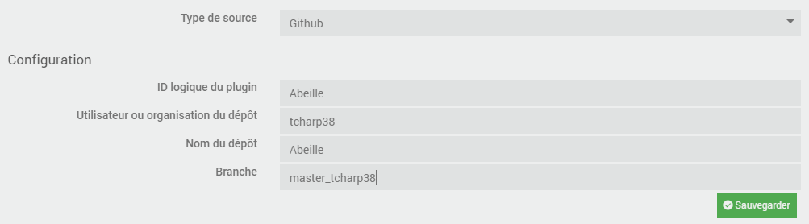
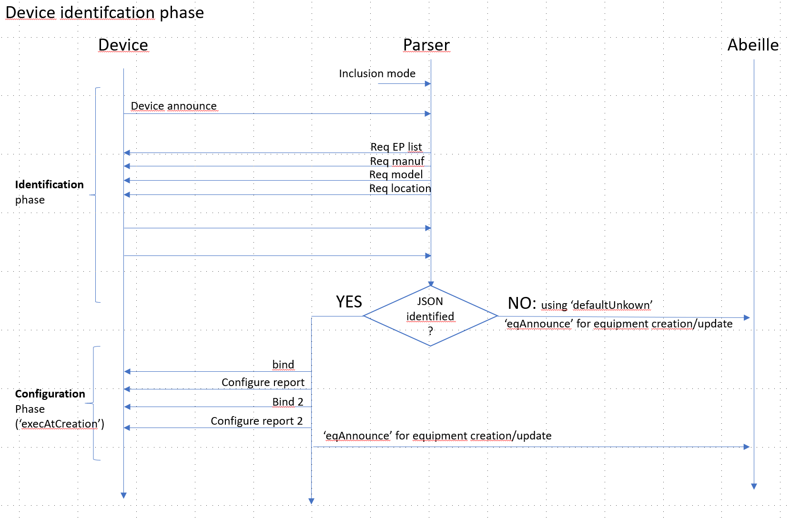

Developpement¶
Cette section est dédiée aux developpeurs ou à ceux qui veulent entrer un peu + dans les entrailles d’Abeille.
Grandes lignes¶
branche master : pour tous les développements en cours a condition que les pushs soient utilisables et « stabilisés » pour la phase de test.
branche beta: pour figer un développement et le mettre en test avant de passer en stable
branche stable: version stable. C’est la branche officielle vue par Jeedom, donc pour tous les utilisateurs.
Dev en cours: autre branche

Règles à suivre¶
La structure de base des plugins est présentée dans la doc Jeedom: https://doc.jeedom.com/fr_FR/dev/plugin_template. Elle est similaire à la structure du “core” lui même.
Un template est fourni par Jeedom: https://github.com/jeedom/plugin-template mais en dehors des informations déja présentées ci dessous, il n’est pas vraiment utilisé ni cohérent.
Il faut que l’on se cale le plus possible sur ces documents.
Règles à suivre additionnelles pour Abeille¶
Outils de dev: Visual Studio Code avec les paramètres par défaut.
Git: garder le master toujours fonctionnel après un commit.
Git: beaucoup de petit commit et souvent mais pas de gros commit pas souvent.
Abeille / Core OS: Garder Abeille le plus loin possible de l’OS. Uniquement quand cela n’est pas possible faire du code spécifique.
Abeille doit tourner sur une VM
Abeille doit tourner sur un docker
Abeille ne doit pas faire plus de 50Mo
La doc n’est pas dans le github du plugin
Pour éviter d’avoir deux personnes qui travaillent sur le meme sujet, nous utilisons les issues Github. Pour chaque dev que vous faites vous créé une issue et on vous l assigne. Une seule et unique personne assignée par issue.
Le code est en Anglais
Toutes les fonctions doivent avoir leur javadoc
Est accepté: ///@TODO: blablabla dans le code
Hiérarchie (répertoires) du plugin Abeille¶
Basé sur « https://doc.jeedom.com/fr_FR/dev/plugin_template ».
Note: Tous les noms de répertoire en ANGLAIS et en MINUSCULES
core : Dossier contenant tous les fichiers de fonctionnement interne. Ne contient pas de fichiers gérant la partie « User Interface » donc pas d’html.
ajax : dossier contenant les fichiers cibles d’appels AJAX. Les fichiers de type AJAX doivent se finir par « .ajax.php ».
class : dossier contenant la classe du plugin. Les fichiers de class php doivent obligatoirement se finir par « .class.php ».
config : Fichiers de configuration du plugin.
Abeille.config.php: Constantes principales du plugin.
devices: Fichiers JSON des équipements supportés
devices_local: Fichiers JSON des équipements NON supportés
Il s’agit des équipements « custom » ou en cours de developpement. Ces fichiers sont locaux et ne sont pas effacés par Abeille.
commands: Fichiers JSON des commandes
php : dossier pouvant contenir des fonctions ne devant pas forcément appartenir à une classe (souvent utilisé pour permettre l’inclusion de multiples classes ou fichiers de configuration en une fois) Toutes les librairies Abeille PHP.
scripts : Dossier contenant les scripts internes d’Abeille.
desktop : Dossier contenant la vue “bureau” du plugin (en opposition avec la vue “mobile”).
js : Dossier contenant tous les fichiers de type javascript.
php : Dossier contenant tous les fichiers de type php qui font de l’affichage.
css : Si nécessaire, fichier CSS pour la vue « desktop ».
modal : Dossier contenant le code des modals du plugin.
mobile : Contient les fichiers gérant la UI « mobile ».
plugin_info : Contient les fichiers permettant à Jeedom de qualifier le plugin, de faire son installation et sa configuration.
info.json : Fichier contenant les informations de base du plugin (il est obligatoire sinon Jeedom ne verra pas le plugin), il contient entre autre l’identifiant du module, la description, les instructions d’installation…
install.php : Fichier contenant (si besoin) les méthodes d’installation et de désinstallation du plugin
configuration.php : Fichier contenant les paramètres à configurer du plugin indépendants des équipements de celui-ci (exemple pour le module Zwave l’ip du Raspberry Pi ayant la carte Razberry)
docs
N’est pas utilisé pour ne pas dépasser la taille limite imposée par Jeedom. Les docs sont dans un repo séparé.
resources
fw_zigate : FW zigbee commun à toutes les zigates actuelles.
prog_jennic : Programmateur JENNIC.
tmp
Répertoire LOCAL (non versionné) ne contenant que qq fichiers qui bougent rarement. Il contient entre autre le fichier de config « developpeur ». Les logs sont migrés sous le « tmp » officiel Jeedom (jeedom::getTmpFolder(« Abeille »)).
Répertoires hors plugin
tmp Jeedom
Il s’agit du répertoire temporaire Jeedom (jeedom::getTmpFolder(« Abeille »)). Utilisé pour stocker les log « previous », les logs de support, ou comme zone tampon pour créer des fichiers compressés par ex.
Propositions à discuter
Network : a virer progressivement. Les fichiers devraient pouvoir trouver leur place dans « core », et/ou « desktop »/ »mobile »
Pas de partie « demond » : Tout comme « Network », il n’ya a pas de classification liée à une fonctionalité. Au vu des recherches, ca n’a pas vraiment de sens. Aucun plugin a isolé son « démon », sauf « openzwave » qui lui meme se base sur un code exterieur. Le format du template n’est jamais utilisé par les plugin officiels. Les démons n’étant rien d’autre que des codes ou classes, je suggère de coller à la structure Jeedom ci dessus et mettre ces codes dans « core ».
tests : Vu dans Jeedom, ca fait du sens d’isoler les codes de test. Sous structure dans la lignée de core. Ex tests/php, tests/class …
Test d’intégrité du plugin¶
Besoin¶
Après une mise-à-jour, il est important de
vérifier que les fichiers sont intègres
virer les fichiers obsolètes
En effet il se peut que par manque de place le processus de mise-à-jour se passe mal et qu’aucune information en ce sens ne soit remontée à l’utilisateur.
La solution adoptée est de générer un fichier de signature MD5 pour tous les fichiers versionnés (et uniquement ceux la), juste avant le push. Le script « .tools/gen_md5.sh » est fait pour ça.
Problèmes¶
Le fichier de signature doit être le DERNIER mis-à-jour avant le push
Il doit contenir une information permettant de savoir si il est toujours valide
Solution actuelle¶
Le script « .tools/git_push.sh » doit être utilisé pour tout nouveau push. Il va
modifier le fichier de version (plugin_info/Abeille.version)
regenerer les signatures via « .tools/gen_md5.sh » dans « plugin_info/Abeille.md5 »
et faire le git add + commit + push
Autres problèmes¶
Si on a une solution pour les push, il n’y en a pour l’instant aucune lors des merge, surtout si le merge est fait directement côté GitHub.
Apres n’importe quel merge, ni la version ni les signatures ne sont à jour. Il faut donc ne pas tenter le test d’intégrité en l’etat.
Attention un « git pull » fait un merge. Seul celui qui clone la branche de 0, ou qui fait un « git reset –hard » sera parfaitement aligné et pourra effectuer le test d’intégrité.
Format “Abeille.version”¶
Le format actuel est du type:
# Auto-generated Abeille's version
YYDDMM-BRANCH-X
La branche est celle de départ, et en aucun cas la branche de destination.
Le “X” permet de numéroter differents push le même jour mais dans le cas d’une branche « stable » ou « beta » il est probable qu’il reste à 1 la plupart du temps.
Format “Abeille.md5”¶
Le format actuel est du type:
# Auto-generated Abeille's MD5 file. DO NOT MODIFY !
# VERSION="210209-DEV_TCHARP38-7"
xxxxxxxxx-md5-skipped-xxxxxxxxxx *.editorconfig
xxxxxxxxx-md5-skipped-xxxxxxxxxx *.gitattributes
4ab85f363cd3a7261ffe01ec8250b0ef *Network/AbeilleLQI.php
0e64aeaf27361deeeda734eec1acdcaf *Network/AbeilleLQI_List.php
351f27fbeb161e7a4d7450c3b5c3548a *Network/AbeilleLQI_Map.php
Langues utilisateurs et developpeurs¶
Le plugin est initialement conçu pour la langue Française uniquement mais pour être aussi ouvert que Jeedom et permettre à la communauté internationale de l’utiliser, des règles de developpement sont nécessaires.
Multi-langues et utilisateur final
Tout ce qui est affichable à l’utilisateur final doit pouvoir être traduit via les fichiers de traduction JSON (ex: core/i18n/en_US.json)
Néanmoins côté logs, seuls les modes info & erreur doivent apparaitrent dans la langue choisie. On ne peut en aucun cas perdre de temps sur des traductions du mode « debug ».
Multi-langues et developpeurs
Tout ce qui est developpement doit être en Anglais (plus compact, plus « ouvert »). Ca inclut donc
les noms de fonctions
les commentaires internes
les noms de répertoire
les noms de variables
les logs en mode « debug »
Propostion pour la doc
Aucune pour l’instant. Elle n’existe qu’en Français et comme de gros changements sont en cours, ca semble prématuré.
Contrairement au plugin, la doc n’a pas de « traduction ». Un traducteur automatique donnerait surement des résultats inappropriés.
Autre solution qui ferait plus de sens pour répondre au plus grand nombre: écrire la doc d’abord en Anglais, et eventuellement creer une version Française quand on trouve du temps.
Procédures de mise-à-jour¶
Ce chapitre n’est pas tiré d’une quelconque doc officielle Jeedom mais issu de recherches via le code Jeedom. Le but est de clarifier la procédure de mise-à-jour utilisée par Jeedom.
A partir du market¶
A creuser
A partir de GitHub¶
A priori Jeedom fait la chose suivante (trouvé dans “core/class/update.class.php”)
Telechargement du zip correspondant au repo donné
Le téléchargement se fait dans /tmp/jeedom/<nom-special> (ex: /tmp/jeedom/tcharp38-Abeille-af97a57)
Décompression du zip au même endroit
Déplacement de tous les répertoires vers la destination finale (…plugins/abeille)
Cette procédure semble avoir plusieurs failles qui doivent être prises en compte côté Abeille
Pas ou tres peu de controle à chaque étape. Un pb de manque de place peut passer inapercu jusqu’au mauvais fonctionnement du plugin.
Les droits des fichiers (en particulier des scripts ou autre binaire) semblent ignorés et pas restaurés.
Format des messages inter démons¶
Ce chapitre décrit le format des messages échangés entre démons.
RECOMMENDATIONS pour la suite: identifiant en minuscule puis majuscules (ex: srcAddr, type, startIndex…).
Parser vers “LQI collector”¶
Pendant la collecte LQI, des requetes du type 004E sont envoyées aux équipements « routeur » et leur réponse 804E est décodée puis envoyée au « LQI collector ».
Le format des messages est adapté aux infos à transférer:
$msg = array(
'Type' => string, '804E',
'SrcAddr' => hex string, $SrcAddr,
'TableEntries' => hex string, $NTableEntries,
'TableListCount' => hex string, $NTableListCount,
'StartIndex' => hex string, $StartIndex,
'List' => list, $NList
$N = array(
"Addr" => substr($payload, $j + 0, 4),
"ExtPANId" => substr($payload, $j + 4, 16),
"ExtAddr" => substr($payload, $j + 20, 16),
"Depth" => substr($payload, $j + 36, 2),
"LQI" => substr($payload, $j + 38, 2),
"BitMap" => substr($payload, $j + 40, 2)
)
);
“Parser” vers “Monitor” & “Cmd” vers “Monitor”¶
Le moniteur collecte les messages envoyés vers et reçus de la zigate pour un équipement particulier et les affiches dans l’ordre.
- $msg = array(
“type” => string, “x2mon” or “newaddr”, “msg” => string, decoded msg if “x2mon” type “addr” => hex string, new short addr if “newaddr” type
);
“SerialRead” vers “Parser”¶
- $msg = array(
“src” = string, “serialread”, “type” => string, “zigatemessage” or “status”,
“zigatemessage”: There is a zigate message attached in “msg” “status”: There is “status” attached
“net” => string, corresponding network (ex: “Abeille1”) “msg” => string, message from zigate (extracted from frame & transcoded) “status” => “ready”, “notready”
);
“parser” vers “Abeille”¶
Le format décrit ci apres est appliqué progressivement. Il concerne les fichiers « AbeilleParser.class.php » & « Abeille.class.php »
Ce format est completement flexible et permet de faire passer les infos variables reçues à chaque msg Zigbee.
La partie « commune » est
- $msg = array(
“src” => “parser”, “type” => <msg_type>, “net” => $net,
);
- Exemples:
- $msg = array(
“src” => “parser”, “type” => “eqAnnounce”, “net” => $net, “addr” => $addr, “ieee” => $eq[“ieee”], “ep” => $eq[“epFirst”], “jsonId” => $eq[“jsonId”], “capa” => $eq[“capa”], “time” => time()
);
- $msg = array(
“src” => “parser”, “type” => “leaveIndication”, “net” => $dest, “ieee” => $IEEE, “time” => time()
);
- $msg = array(
“src” => “parser”, “type” => “attributReport”, “net” => $dest, “addr” => $SrcAddr, “ep” => $EPoint, “name” => $ClusterId.”-“.$AttributId, “value” => false, // False = unsupported “time” => time(), “lqi” => $lqi
);
“parser” vers “cmd”¶
PAS ENCORE IMPLEMENTE !! Juste à l’état de reflexion.
- examples d’application:
$this->msgToCmd(« TempoCmd ».$dest. »/Ruche/ActiveEndPoint&time= ».(time()+($i*2)), « address= ».$Addr ); $this->msgToCmd(« Cmd ».$dest. »/Ruche/PDM », « req=E_SL_MSG_PDM_HOST_AVAILABLE_RESPONSE »); $this->msgToCmd(« Cmd ».$dest. »/Ruche/getManufacturerName », « address= ».$SrcAddr.”&destinationEndPoint=”.$EP ); $this->msgToCmd(“CmdAbeille1/”.$SrcAddr.”/IEEE_Address_request”, “shortAddress=”.$SrcAddr);
- $msg = array(
“src” = string, “parser”, “type” => string, “cmd”/”delayed_cmd” “net” => string, corresponding network (ex: “Abeille1”) “addr” => hex string, equipement short address “ep” => ?, End Point “cmd” => string, command name (logical Id, part of those supported by target EQ itself) “payload” => string, payload/data “time” => ?, time for “delayed_cmd”
);
Format de la DB Jeedom¶
Ce chapitre décrit le format de la database Jeedom appliqué au plugin « Abeille ».
CE DOCUMENT EST INCOMPLET !!! Derniere update: 19/sep/21
Configuration (table config)¶
plugin: « Abeille »
key
AbeilleActiver1 .. 10: Indique si la Zigate X est activée.
AbeilleIEEE_Ok1 .. 10: Indique si la vérification de l’adresse IEEE est correcte pour éviter les switchs de port.
AbeilleIEEE1 .. 10: Adresse IEEE de la Zigate X.
AbeilleParentId: Objet parent par défaut utilisé lors de l’inclusion d’un nouvel équipement.
AbeilleSerialPort1 .. 10: port (ex: /dev/ttyS1)
AbeilleType1 .. 10: Type de Zigate X.
active
agressifTraitementAnnonce
blocageRecuperationEquipement
blocageTraitementAnnonce
DbVersion
deamonAutoMode
deamonRestartNumber
IpWifiZigate1 .. 10
lastDeamonLaunchTime
lastDependancyInstallTime
monitor: ID de l’équipement à surveiller par AbeilleMonitor.
preventLQIRequest: Option avancée pour empecher (si “yes”) les requètes LQI à minuit. Certains équipements rebootent suite à ça.
state
zigateNb: Nombre de zigates installé.
value
Equipement (table eqLogic)¶
- id:
ID de l’équipement. Affecté par Jeedom.
name
generic_type
logicalId
object_id
eqType_name
configuration
createtime: mis-à-jour par Jeedom à la création de l’équipement.
updatetime: mis-à-jour par Jeedom à chaque changement de la configuration.
calculValueOffset: utilisé par Jeedom (cmd.class.php). Ex: « calculValueOffset »: »#value#*10 »
batterytime: mis-à-jour par Jeedom
battery_type: Utilisé par Jeedom. Mis à jour par Abeille à partir de « batteryType » du JSON.
ab::jsonLocation: Localisation du JSON (officiel=Abeille, custom/user=local)
isVisible
isEnable
status
- lastCommunication: date(“Y-m-d H:i:s”), mis-à-jour par
cmd.class.php, event()
eqLogic.class.php, checkAlive()
eqLogic.class.php, checkAndUpdateCmd()
timeout
category
display
order
comment
tags
Commandes (table cmd)¶
La table « cmd » de Jeedom est formatée comme suit:
- id: int
ID de la commande. Affecté par Jeedom.
- eqLogic_id: int
ID de l’équipement auquel la commande est rattachée.
- eqType: varchar
« Abeille »
- logicalId: varchar
Nom « logique » de la commande. Prend actuellement la clef d’entrée de la commande mais semble inutilisé & redondant avec « topic ». A REVOIR côté Abeille !!
- order: int
Ordre d’apparition de la commande (si visible) dans le widget.
- name: varchar
Nom Jeedom de la commande.
- configuration: text
A priori libre d’utilisation par Abeille donc ne contient que des champs spécifiques Abeille. Correct ?
- template: text
??
- isHistorized: varchar
0 ou 1
- type: varchar
Type de commande: « info » ou « action »
- subType: varchar
Type d’information: « string », « binary », « numeric », « other »
- unite: varchar
Unité de l’information (si cmde info): ex “%”
- display: text
Options d’affichage dans le widget.
- isVisible: int
0 ou 1
- value: varchar
??
- alert: text
??
- generic_type: varchar
??
Le processus d’inclusion¶
La phase d’inclusion d’un nouvel équipement est très importante. Pendant cette phase Abeille va
tenter d’identifier le periphérique
le configurer si nécessaire (bind + config report)
puis le déclarer dans Jeedom avec un ensemble de commandes qu’il supporte
Cette phase est résumée dans le diagramme suivant:
Phase d’identification¶
La Zigate est mise en mode inclusion, prête à accepter tout équipement qui se signalera.
- EQ->Abeille: Un EQ se signale (device announce)
C’est ici que l’adresse IEEE et l’adresse courte correspondante sont extraites.
Abeille->EQ: Abeille demande la liste des « End Points »
- Abeille->EQ: Abeille demande le nom du modèle & fabricant (attributs « ModelIdentifier » & « Manufacturer ») sur le premier EP
Accessoirement l’attribut « location » est aussi demandé. Il peut être utile si « ModelIdentifier » n’est pas supporté.
- Si attribut « ModelIdentifier » supporté
Nom JSON extrait de « ModelIdentifier » (suppression des caractéres spéciaux et espaces). Les modules « DIY » doivent normalement rentrer dans cette categorie. Bonc bien penser à renseigner leur « ModelIdentifier » dans leur firmware.
- Si l’attribut « ModelIdentifier » n’est pas supporté
- A ce jour peu de cas rencontrés;
Un module DIY de Texas Instrument => Bug firmware (ModelIdentifier non renseigné).
Les volets Profalux => identifiés par leur attribut « Location ».
- Si le modèle JSON est connu (fichier JSON trouvé dans core/config/devices) pas d’autre interrogation nécessaire.
Tout est supposé être décrit dans le fichier de config JSON. Passage à la configuration du device (si besoin).
- Si le modèle JSON est inconnu:
Pour chaque EP, demande la liste des clusters supportés Ces infos ne sont actuellement pas utilisées par Abeille mais stockées dans “AbeilleDiscover.log” pour pouvoir créer manuellement le modèle JSON.
Identification spéciale Xiaomi¶
Les capteurs Xiaomi V1 ne répondent pas à la requète « Active End points ». La phase d’identification standard ne peut fonctionner dans ces conditions.
Pour Xiaomi, la phase est modifiée comme suit:
Pas d’interrogation de la liste des « end points »
Demande « modelId » sur EP01
Identification en fonction des modèles supportés.
Phase de configuration¶
Si l’équipement est reconnu (modèle JSON trouvé) alors il reste à exécuter les commandes marquées “execAtCreation”.
Il s’agit en general de “bind” (mise-en-place d’un chemin virtuel)
et de configuration “reporting” (demande à l’EQ de faire un rapport tous les X sec au max)
Phase de découverte¶
Si l’équipement n’a pas été reconnu, on entre alors dans cette phase de découverte. Il s’agit la de lister ce qu’il sait faire (liste des “End Points”, liste des clusters, et liste des attributs)
Actuellement cette étape consiste juste à récuperer
Les infos de base (IEEE, manufacturer, modelId, location)
La liste des « End Points »
La liste des clusters supportés pour chaque EP
Le résultat de cette interrogation est disponible dans “AbeilleDiscover.log” (accessible via la page support)
La gestion des démons¶
Vue d’ensemble¶
Abeille est basé sur le fonctionnement de plusieurs démons s’executant en parallèle: - AbeilleCmd en emission, pour envoyer les ordres vers la zigate - AbeilleSocat en reception, pour faire le lien entre une zigate wifi et AbeilleSerialRead - AbeilleSerialRead en reception, pour lire les message de la zigate - AbeilleParser pour decoder les messages recus via AbeilleSerialRead
Ordre de lancement¶
Ce point est clef.
En effet si AbeilleCmd est lancé en premier et qu’il envoie deja des ordres à la zigate avant meme que le chemin de retour ne soit fonctionnel (AbeilleSocat>AbeilleSerialRead) on risque de manquer des informations. Ce pb à été vu par exemple dans le cas suivant - AbeilleParser ignore les messages si l’adresse IEEE de la zigate ne correspondant pas à ce qui est attendu (possible dans le cas ou les ports different d’un boot à l’autre) - Manque de pot AbeilleCmd avait demandé l’adresse IEEE avant que SerialRead puisse recuperer l’information. - Du coup plus aucun message de retour n’etait accepté
Pour résoudre ce problème les démons sont lancés, puis les premiers messages sont envoyés vers AbeilleCmd. Cela inclut le message 0009 (Get Network State) qui récupère l’adresse IEEE de la zigate. Les premiers messages ne sont donc plus lancés par « deamon_start() » mais fait au départ du démon principal (deamon()).
Lancements concurrents¶
Au départ le redémarrage des démons (nécessaire si crash) était déclenché par deamon_info(). Manque de pot cette fonction appelée par Jeedom est complètement asynchrone et peut même être appelée plusieurs fois par seconde. Ca entrainait (si crash d’un démon), de multiples redémarrages concurrents du même démon. Même si ce dernier vérifie qu’il est le seul, il s’ensuit qu’il s’arretait car voyait un autre démon identique, puis le process le relancait à nouveau. Ca finisait par « tomber en marche » mais inefficace, perte de temps, et surtout perte de données au passage.
Suite à ça, les démons sont vérifiés une fois par min via le « cron 1 min ». Si démon manquand il est relancé. Du coup 1 seule source de (re)lancement et pas de lancement concurrent.
Format de fichier de configuration d’un équipement (JSON)¶
Les équipements supportés sont décrits dans des fichiers au format JSON, discuté ci-après. Ces fichiers se trouvent dans « core/config/devices » pour les équipement supportés nativement par Abeille ou « core/config/devices_local » pour les équipements perso/custom ou en cours de développement et non encore inclus dans Abeille.
Exemple:
{
"BASICZBR3": {
"type": "Sonoff BASICZBR3 smart switch",
"manufacturer": "Sonoff",
"model": "BASICZBR3",
"timeout": "60",
"category": {
"automatism": "1"
},
"configuration": {
"icon": "BASICZBR3",
"mainEP": "02"
"batteryType": "1x3V CR2032",
"lastCommunicationTimeOut": "-1",
"paramType": "telecommande",
"paramBatterie": "true"
},
"commands": {
"Groups": { "use": "Group-Membership" },
"Status": { "use": "zb-0006-OnOff", "isVisible": 1, "nextLine": "after" },
"On": { "use": "zbCmd-0006-On", "isVisible": 1 },
"Off": { "use": "zbCmd-0006-Off", "isVisible": 1 },
"Toggle": { "use": "zbCmd-0006-Toggle" },
"Up": { "use": "zbCmdR-Custom", "params": "ep=01&clustId=0006&cmdId=01", "isVisible": 1 },
"Down": { "use": "zbCmdR-Custom", "params": "ep=02&clustId=0006&cmdId=00", "isVisible": 1 }
}
}
}
type: OBLIGATOIRE (anciennement “nameJeedom”)
Type d’équipement. Ex: « Tuya smart socket »
manufacturer: OBLIGATOIRE
Nom du fabricant. Exemple: « Sonoff »
model: OBLIGATOIRE
Modèle ou référence exacte du fabricant. Exemple: « BASICZBR3 »
timeout
Durée (en min) au dela de laquelle l’équipement est considéré comme HS si aucune nouvelle de lui.
comment: Optionnel
Permet d’ajouter un commentaire pour cet équipement.
category
Exemple:
"category":{"automatism":"1"}
Liste les categories (plusieurs possibles) correspondant à l’équipement. Note: Ce paramètre permet d’initialiser le champ « category » de la table Jeedom « eqLogic ».
light
heating
security
energy
automatism
multimedia
default
configuration
Note: Ce paramètre permet d’initialiser le champ « configuration » de la table Jeedom « eqLogic ».
icon
Nom de l’icone associé.
mainEP: OBLIGATOIRE
Defini le « End point » à utiliser par défaut si celui-ci n’est pas explicite dans la commande.
paramType
telecommande
telecommande7groups
batteryType: OBLIGATOIRE si équipement sur batterie
Description du type de batterie (ex: 1x3V CR2430)
paramBatterie: ??
lastCommunicationTimeOut: ??
GroupeEPx
Ex: « GroupeEP1 »: « 1001 »,
commands
Exemple:
"commands": { "<premiere cmde Jeedom>": { "use": "<cmde de base>", "params": "ep=XX" }, "<deuxieme cmde Jeedom>": { "use": "<cmde de base>", "params": "ep=XX", "isVisible": "yes", "isHistorized": "yes" }, ... "<derniere cmde Jeedom>": { "use": "<cmde de base>", "params": "ep=XX", "execAtCreation": "yes" }, }
Notes pour les commandes
Les commande de base sont celles définies dans « core/config/commands »
« ep » permet de préciser le EP (End Point). Si il n’est pas défini, « mainEP » sera utilisé.
« execAtCreation » permet de préciser que cette commande doit etre executée pendant l’inclusion pour configurer l’equipement. Par défaut la commande n’est pas exécutée.
Format fichier de commande (JSON)¶
Ces fichiers se trouvent dans « core/config/commands ».
Exemple
- {
- « BindShortToZigateBatterie »: {
« isVisible »: 0, « name »: « BindShortToZigateBatterie », « isHistorized »: 0, « Type »: « action », « subType »: « other », « invertBinary »: « 0 », « template »: « », « configuration »: {
« topic »: « bindShort », « request »: « targetExtendedAddress=#addrIEEE#&targetEndpoint=#EP#&ClusterId=0001&reportToAddress=#ZiGateIEEE# », « visibilityCategory »: « Network », « minValue »: « 0 », « maxValue »: « 90 », « historizeRound »: « 0 », « calculValueOffset »: « », « execAtCreation »: « Yes », « execAtCreationDelay »: « 9 », « repeatEventManagement »: « always », « visibiltyTemplate »: « 1 », « RefreshData »: « 1 »,
}, « display »: {
« forceReturnLineAfter »: « 1 »
}
}
}
Clef d’entrée (BindShortToZigateBatterie)
Devient « logicalId » de la commande. Il n’est pas forcement en ligne avec le nom du fichier.
name: OBLIGATOIRE
Nom Jeedom de la commande
Type & subType: OBLIGATOIRE
Type = “info” ou “action” subType = “numeric”, “string”, “binary”, “other”
invertBinary: Optionnel. Utilisé par Jeedom pour inverser le résultat d’une commande info du type « binary ».
TODO: Devrait etre dans la section « display ».
order: OBSOLETE
L’ordre d’affichage des commandes est par défaut celui de leur déclaration dans le fichier de config « équipement ».
configuration
topic: Nom Abeille de la commande
request: parametres associés à “topic”
minValue:
maxValue:
historizeRound: ?
calculValueOffset: Indique à Jeedom d’appliquer une formule sur la valeur reçue.
Ex: « calculValueOffset »: « #value#/10 », Ex: « calculValueOffset »: « #value#/255*100 »
repeatEventManagement: ?
visibiltyTemplate: ? Semble ne pas etre utilisé du tout, ni par Jeedom ni par Abeille.
RefreshData: ?
uniqId: OBSOLETE
display: Options d’affichage optionnelles.
forceReturnLineAfter: Force le passage à la ligne après l’affichage du widget.
Variables de personalisation¶
De manière à pouvoir utiliser des commandes génériques, un certain nombre de variables permettent de personaliser la commande lors de son utilisation par l’équipement.
#addrIEEE# ou #ADDR#: Adresse IEEE de l’équipement
#ZiGateIEEE#: Adresse IEEE de la zigate
#EP#: End Point
Normalisation des commandes de base zigbee¶
EN COURS DE REFLEXION/DEVELOPPEMENT !!
Les commandes de base sont les commandes internes à Abeille. Parmi elles, il y a les commandes zigbee directement issues du standard et normalisées ci-apres:
attribut R => zbGet-<ClustId>-<AttribName> (ex: zgGet-0000-ModelIdentifier)
attribut value => zb-<ClustId>-<AttribName> (ex: zb-0000-ModelIdentifier)
attribut W => zbSet-<ClustId>-<AttribName>
command => zbCmd-<ClustId>-<CmdName> (ex: zbCmd-0003-Identify)
command reçue => zbCmdR-<ClustId>-<CmdName> (ex: zbCmd-0003-Identify)